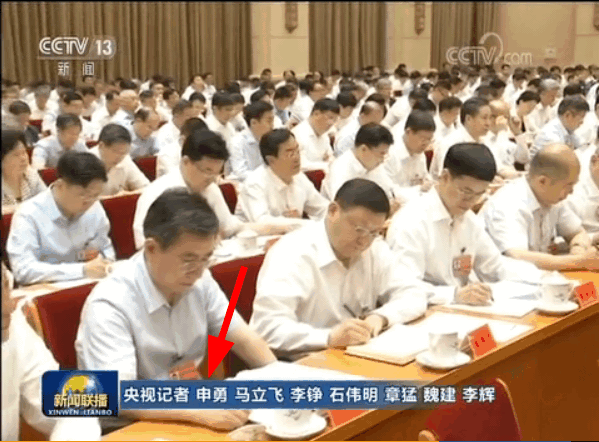
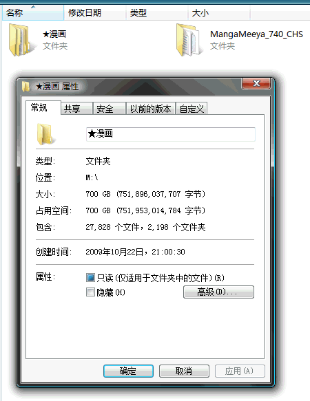
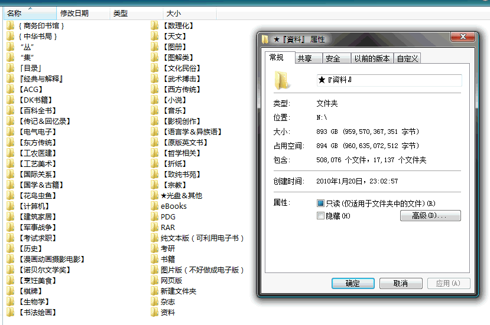
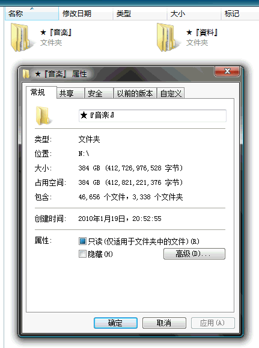

释题
在《三自运动插曲》当中展望下一步计划的时候没说清楚，本篇预定内容不是「多语种」而是「多元文化」，虽然素材的「形式」是「语种」，但「内容」可不是。
就用各种「百科全书」举例，通称《大英百科全书》的«Encyclopaedia Britannica»，境内曾有「中文版」《简明不列颠百科全书》出版。其内容是对「原文」的「翻译」，可不是从兲朝视角阐述其中词条，与《中国大百科全书》完全没关系。
哪怕就看自由的「维基百科」也知道，同一个词条在「多语种」的形式之下，是不同语种的用户从自己独立的人格和意志出发用自己的脑壳思考阐述自己的观点，内容对照不起来司空见惯，尤其是政治历史事件，立场针锋相对也是理所当然。
哪怕是同一个语种，「大英」和「大美」的百科全书还不一样，尤其是对照着最近的应景「贸易战」，想必读者更能深刻的领会到这一点，不会再被根红苗正忠君爱国童年才俊以主旋律正能量或娱乐至死的形式忽悠了吧？
所以，不能以「翻译」字眼将「多元文化」矮化为「多语种」。即便是九省通衢の活跃色目帐号，作为「膝盖生根头顶绿得发黑贱到骨子里去了的光明会共济会奴才」，哪怕讲英语还是同样的套路。当然，我只懂汉语，只看得懂「文艺爱好者」引用查博导话本所表达的通古斯贵种以汉语发表的政治宣言：
康熙问兵部尚书明珠：“明珠，此事是兵部该管，你以为如何？”
明珠道：“圣上天纵聪明，高瞻远瞩，见事比臣子们高上百倍。奴才想来想去，撤藩有撤的好处，不撤也有不撤的好处，心中好生委决不下，接连几天睡不着觉。后来忽然想到一件事，登时放心，昨晚就睡得着了。原来奴才心想，皇上思虑周详，算无遗策，满朝奴才们所想到的事情，早已一一都在皇上的料中。奴才们想到的计策，再高也高不过皇上的指点。奴才只须听皇上的吩咐办事，皇上怎么说，奴才们就死心塌地、勇往直前的去办，最后定然大吉大利，万事如意。”
康熙微微一笑，说道：“我是叫你想主意，可不是来听你说歌功颂德的言语。”
明珠磕头道：“圣上明鉴：奴才这不是歌功颂德，的的确确是实情。自从兵部得知三藩有不稳的讯息，奴才日夜担心，思索如何应付，万一要用兵，又如何调兵遣将，方有必胜之道，总是要让主子不操半点心才是。可是想来想去，实在主子太圣明，而奴才们太脓包，我们苦思焦虑而得的方策，万万不及皇上随随便便的出个主意。圣天子是天上紫薇星下凡，自然不是奴才这种凡夫俗子能及得上的。因此奴才心想，只要皇上吩咐下来，就必定是好的。就算奴才们一时不明白，只要用心干去，到后来终于会恍然大悟的。”
若是把这段「翻译」成现代汉语普通话，就是「军令如山倒」「一切行动听指挥」「理解的要执行，不理解的也要执行，在执行中加强理解」；若是翻译成当代汉语普通话，就是党国高音喇叭于美帝灯塔国独立纪念日（7月4日）《新闻联播》当中所播放的：
元首强调：党的力量来自组织。党的全面领导、党的全部工作要靠党的坚强组织体系去实现。党中央是大脑和中枢，党中央必须有定于一尊、一锤定音的权威。党的地方组织的根本任务是确保党中央决策部署贯彻落实，有令即行、有禁即止。党组在党的组织体系中具有特殊地位，要贯彻落实党中央和上级党组织决策部署。每个党员特别是领导干部都要强化党的意识和组织观念，自觉做到思想上认同组织、政治上依靠组织、工作上服从组织、感情上信赖组织。
太阳底下没有新鲜事，在这河清海晏歌舞升平的兲朝，新时代中国特色社会主义大好形势下，根红苗正忠君爱国童年才俊再怎么狡辩，都不能洗白「膝盖生根头顶绿得发黑贱到骨子里去了」的形象，只能倒打一耙贼喊捉贼造谣污蔑栽赃陷害，把这盆脏水泼到坚决不肯助纣为虐为虎作伥的人民群众头上。
至于为什么九省通衢の活跃色目帐号最喜欢查博导话本当中的这一段，那还得结合「文艺爱好者」的动向。之前说过了，划时代网文大作《重生之我是高衙内》当中主角的户口本爹「高俅」，专业是「足球运动员」，而职务是「太尉」，就是后来的「兵部尚书」。
而上合组织青岛峰会之后由山东公务员兼职的「文艺爱好者」所吹捧的《金圣叹评点水浒传》当中，「高俅」是铁血大送朝祸乱的根源：「盖不写高俅，便写一百八人，则是乱自下作也；不写一百八人，先写高俅，则是乱自上作也」。
与此同时，一堆专攻仙侠修真题材的码字巨侠，在炒作《封神演义》，说「高俅」这种角色与「妲己」没区别，都是接受了「组织」安排的任务，特意下凡来激化矛盾制造冲突增加剧情跌宕起伏程度。还有一个旁证，就是「申公豹」，码字巨侠信誓旦旦的宣称，党国高音喇叭当中就在明确的「打哑谜」，凡是元首出场的画面，央视记者都是「申」字开头。

申公豹
说这「申公豹」的唯一任务，就是到处抓壮丁，因为把持繁荣的中文互联网舆论工作，所以可以到处传播负能量段子，低成本诈骗不明真相的人民群众。无论人民群众坚持什么，包括但不限于「仁义礼智信望爱」，都能庸俗化「把美好的东西毁灭给人看」，最终达到把还有利用价值的不超过34岁的各行各业工作者收编为「膝盖生根头顶绿得发黑贱到骨子里去了」的奴才为反动政权卖命，到头来「献了青春献终身，献了终身献子孙，遗产都交党费，骨灰盒上盖一块画着镰刀榔头的抹布就被打发」之目的。
然后「历史爱好者」不服了，到处「曰若稽古」，说这「申」字是在影射「申侯」。这位贵种当年把闺女嫁给周幽王，外孙子却不能接班，于是勾结少数民族祸乱关中平原，干掉了「褒姒」生的「小儿子」，把外孙子捧为兲子。这段历史，经常与「太平天国」祸乱于咸丰年间，刚消停就开始了「同治回乱」相提并论，其中「慈禧」的面目模糊不清。
码字巨侠继续不服，说「申公豹」最大的功劳，是把「殷郊」「殷洪」劝回来。本来「嫡子」都已经深刻认识到户口本爹是个人渣了，跑路上学进修获得财务自由，结果在复旦残联下属滴血认亲实验室「王佐」的协助下，看见诡辩唯物主义伪证就脑壳进水信了什么血浓于水的狗屁道理，傻呵呵回家送死，被「妲己」当奴才使唤不说，还替「同父异母弟弟」当肉盾。
再然后，就到了前几篇随笔排版用《春秋》开头当素材的场合了，何止兲家，就连诸侯也一样，「鲁隐公」还不照样是一块抹布，主旋律正能量看多了脑壳进水，把「平国而反之」当成历史使命，照样被「同父异母弟弟」摘桃子灭口了吧。
果不其然太阳底下没有新鲜事，看见这中华民族传统文化精华，豪门贵种走兽派又不敢公开焚书坑儒鼓吹「全盘西化换种洗脑论」，于是只能恼羞成怒气急败坏，指使充沛的奴才在九省通衢大造舆论带节奏了嘛。
缘起
在2010年底32岁生日（11月16日）刚过的时候，在龙空发了个帖子，其中主要发言如下：
ΘΑΝΑΤΟΣ
房间太小书太多，实在摆不下。
昨天在卓越订了个四层小推车，今天送到了。
下午组装花了约一小时，腰酸背痛，好容易搞定了之后，老汉推车进卧室，把一部分书挪过来……
书房兼卧室
这次买的不是第一架，第一架是右边那个，也是在卓越买的，比这次的要宽一倍，感觉很划算。
挪书之前，第一架上面已经堆到一米五高摇摇欲坠，架子都压歪了。（现在还能看出歪来，不能恢复原状了）
总之，现在家里共有九个书柜，一个书架，宽窄两辆小推车，两个大号旅行箱，一个中号旅行箱，一个壁橱都是满满当当的……十一个柜子（包括俩衣柜）顶上堆到房顶，床头挡板上五摞书桌上四摞书各堆了半米高。
Rabirius
右边那个是拧螺丝的，去年咱组装也用了二十分钟不到。
左边这个不一样，是棍子上贴塑料片从隔板边缘的洞穿过去挤住，要费劲得多～
Rabirius
只有宜家买的工具套装中的钢榔头，垫了毛巾四角轮流用力慢慢敲进去……这是四层的推车有四个挡板……
Rabirius
很多实体书没有电子版，有电子版的基本上咱都尽量收集了。
目前硬盘上扫描版漫画超过700GB，应该好多还分散在原来刻录的光盘上懒得挑出来。

漫画
目前硬盘上PDF、DJVU格式为主的电子书超过1TB，只来得及把感兴趣的部分初步整理一下，不少还在eMule的下载目录里和其他位置。

资料
要说软件版本的电子书和百科全书……今年买了个家用NAS，总共4TB空间，硬盘上没地方只能放在上面，比如VeryCD的“德语数字图书馆”已经发布了84.7GB，咱全都下来了。
几年以前就不看动画了，过去下载的都在光盘上；电影几乎不看，各种科教片纪录片倒是下载了不少，也在光盘上；最近几个月来开始下载开放课程，硬盘上已经超过600GB了也～
Rabirius
以前的成套小人书倒是有不少，年幼时凡是家里买得起的都买了。
日本美国的漫画几乎是电子版，实体不多。
书架上都是普通文字书籍，一小部分是学生时代省吃俭用买的，大部分都是工作以后买的。
Rabirius
目前电脑上有四块硬盘：
- C：西部数据640GB黑盘64MB缓存，当系统盘性能很好。
- D：西部数据1TB绿盘
- M：西部数据1.5TB绿盘
- N：西部数据2TB绿盘
家用NAS是色卡斯的N2200，两块希捷5900转2TB组建RAID0，共4TB空间。下一步打算买N4200或N5500组RAID1，否则太不保险了。
伦家第一块硬盘是昆腾3.2GB，从希捷20GB开始似乎每个容量的都买过。如果缓存不够大，作为下载的D盘会损坏，我有120GB、400GB、750GB的三块硬盘都是坏掉的而不是因为容量不够换掉的。
我家用ADSL，最初是512KB，后来是1MB，今年十月开始2MB……因为距离电话局远4MB的速度到不了。
Rabirius
下载的书多了就会发现有些丛书是扎堆在一起的，比方说《一生不得不做的300种×菜》共八本……这种时候就开一个目录把它们拖进去。
实际上完全不是刻意的分类……比方说“书籍”目录下面现在有22075个文件……只是下载完了放进去而已，根本来不及整理……
Rabirius
每本书都会看目录和前言后记，记住主要内容及其位置，一旦有需要可以立刻翻出来。
然后就是根据兴趣一本一本慢慢看，每看完一摞就从书柜里换出一摞来放到桌子上。
Rabirius
实体书应该一万多本了吧……近几年新买的书都用Excel管理起来，扉页和书侧都盖了章（图中一串红点能看出来）……以前的来不及整理。
其实大家应该把精力放在收集电子书上，贴图上已经显示出目录下共有五十多万个文件……抵得上小型图书馆了。
在目前土共睁眼闭眼的版权政策下，电子书的成本才真是低廉，买多少硬件存储数据都划算（因为我是和自己比，和实体书比）……带宽用来下载资料总比下载好孩子片有意义。
Rabirius
对了，还有音乐……

音乐
都是MP3（以lame --preset extreme或insane压的），有少量其它格式和视频（MV）。
最初是买（盗版）CD，大学快毕业时曾经鬼迷心窍一次买了一百张共一千元整，之后几个月没过好。
工作之后尤其是近几年可以从网上下载了，率先挑APE/FLAC/WV等无损格式，实在没有再找比特率最高的MP3源。
顺便友情推荐音频播放器：foobar2000，世界上最好最方便的，涉及音频操作顺手之极。比如从无损压MP3，直接把无损文件或CUE拖进列表，选中右键“convert”即可，当然前提是提前配置好各种工具和参数。
伦家的iPod都用过好几个了，上一个Classic 80GB已经灌满了评书相声给爹用，现在自己用Touch四代64GB，上周才送到的。苹果只有网店订购才提供激光刻字服务，这次刻得字是“故人心似中秋月，肯为狂夫照白头”。
顺便，评书相声的音频、戏曲曲艺的视频，加起来也有几百GB了……还有好多京剧评剧是VCD的形式来不及转换。以前在太平街有个戏曲专营店，后来没了……好在需要的话可以从淘宝上继续订购VCD和DVD自己转。
Rabirius
俺家很穷……小时候父母收入除了衣食住行之外都投资在我身上……
工作之后……我的收入基本上除了衣食住行和孝道之外都投资在自己身上……
将来成家之后……打算继续发扬优良传统，除了衣食住行孝道敦伦之外都投资在孩子身上……
Rabirius
在日本工作过两年，尽量了解到社会的方方面面，算是有了些见识。
如果说行万里路意味着驴客那样的以旅行箱上标签密度为标准衡量的话，看探索频道历史频道国家地理的纪录片就够了。
Rabirius
差得远，百闻不如一见，文字不如纪录片有说服力。看了之后还有不明白的，再去找资料（实体书或者上网搜索）也行。
Rabirius
实体书里漫画很少，都是早期买的国内盗版日本漫画。后来可以下载了之后就不买了。
早期的优秀站点，是“动漫进行时”（comicing.org），清华一位大侠架设的FTP，后来站长硬盘坏掉了之后就再也没开。现在当然又有BT又有ED2K，孩子们幸福多了。
不过呢，当时下载的漫画都是爱好者友情扫描的，通常一卷只有十几兆，勉强能看清内容。如今如果发现同样的漫画精度更高（有几十兆的，有一两百兆的）就会下载替换旧版。
Rabirius
即便是如今土共睁眼闭眼的处理版权问题之下，下载和上传的责任是不一样的。
所以说……各位珍惜大好时光和带宽吧，千里之行始于足下，咱老汉的电子版收藏能有现在的规模也花了十年之久。
Rabirius
顺便吐糟……
咱老汉虽然不是圈里人，不过一直以来对于ACG的东西熟悉的很。估计咱老汉淡出之后，如今活蹦乱跳的野人及其智障粉丝们才刚刚入门。
咱老汉二十一世纪以来就再没有掺和科幻圈内的事情，上次就科幻世界内讧一事攻击这帮八零后野人是实在忍不住了，他们还从未对于中国科幻事业作出哪怕一丁点贡献就开始以元老自居满处招摇撞骗。
咱老汉最后一次和陌生人打万智牌（当年那种简陋条件下，或曰“比赛”）还是十年前；最后一次打还是大战役环境，很喜欢多色牌攻略（我擅长红黑）；后来再一次以多色为卖点的拉尼卡环境（尤其是双色的十公会）出现之后曾经后想复出，结果忍住了。
不为什么，搞这些往往被视为不务正业，投入全部精力那是孩子们的梦想，而我已经长大了，需要干好正事之后再考虑。
所以说，某野人及其智障粉丝们把S1视为主场，咱看来实在可笑。只不过由于时间精力有限，战略才会从“前沿部署”改为“前沿存在”。
不想成天摆老资格压人，也不想和毛没长全屁嘛不懂的小13孩子们斗嘴，达到攻击野人的目的就算，不纠缠。
Rabirius
美军战略。
简单说，美国人天下无敌的时候，希望在每一个冲突地区都有军队，有事先开打，后续部队会增援。后来做不到了，那就希望保证投送能力，出了事可以及时赶到并开打。
对于论坛来说，前沿部署就像咱在龙空这样，本尊混得脸熟，预备马甲有的是，野人敢露头，接下来就是打地鼠游戏。
而在SB、S1以及其他野人经常出没的地方，咱的前沿存在战略保证有个能发言的ID即可，出了事再过去战～
Rabirius
其实访问量不大的话，RAID5就够了。
前面是我笔误写错了，买N4200一共四块盘做RAID1太浪费了……